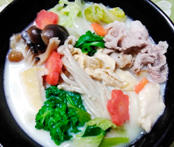

豆乳うどん
- 調理時間：20分
- （一人当たり）
- カロリー：468kcal
- たんぱく質：23.4g
- 脂質：15.9g
- 炭水化物：56.4g
- 塩分：1.9g


＜2人分＞
- うどん（ゆで）
- 2玉
- 豚肉
(食べやすい大きさに切る) - 80g
- 白菜（ざく切り）
- 1枚
- シメジ
（石づきを取ってほぐす） - 30g
- エノキタケ
（石づきをとってほぐす） - 30g
- ニンジン
（お好みの大きさに
※写真は花型） - 50g
- 菜花（ざく切り）
- 1～2茎
- セリ（5㎝幅に切る）
- 1株
- 油揚げ（短冊切り）
- 1枚
- 水
- 2カップ
- 麺つゆ（濃縮タイプ）
- 適量
- 豆乳
- 1カップ


- 野菜と豚肉は食べやすいように切る。（材料の切り方参照）
- 鍋に水、麺つゆを加え、①の食材を加えて煮込む。（水が足らなければ足す）
- 茹でうどんは、水で洗ってほぐしておく。
- 材料に火が通ったら、③のうどんを加えて煮込む。
- 仕上げに豆乳を少しずつ加えて温めて完成。
豆乳を加えてから強火で煮込み過ぎると分離するので注意しましょう。
豆乳うどん
冬は、「腎」を養生する季節だといわれています。腎臓は体内の水分を循環させて余分な水分を膀胱に送り、排泄させる機能がありますが、寒くなると汗として水分がでる量が減るため、尿量が増えて腎に負担がかかります。また身体の冷えにより血流が悪くなると、これも腎を疲れさせてしまいます。冬は熱やエネルギーを体内にためて内臓をしっかり守りましょう。温かい料理で厳しい冬を乗り切りましょう。